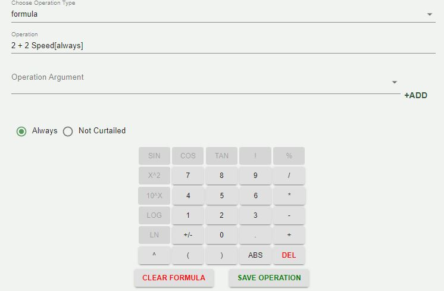
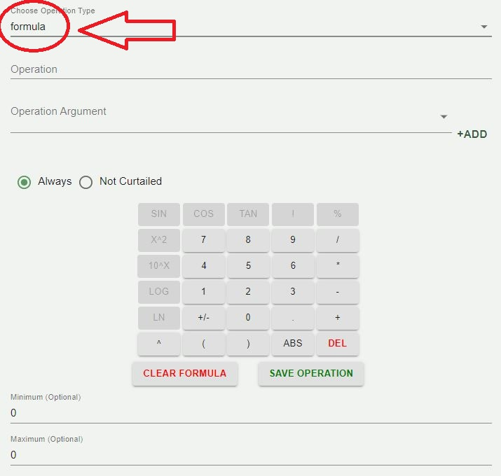

ILC Web application: User guide¶
introduction¶
The intelligent load application is a tool to use. // insert more here:
ILC APPLICATION CONFIGURATION¶
!This doc is a test for creating a user guide. Edit this out when entire doc draft is finished.!
The ILC application behavior is controlled through three configuration files:
the main configuration file
the device/criteria configuration page
the criteria pairwise comparison configuration page
The following sections describe what each configuration file controls and the parameters defined within these configuration files.
Importing master driver configuration store¶
This is the main configuration tool. There is an option right at the start that allows you to upload a file. This will allow you to import your master configuration file.

To import a configuration file, or choose a seperate file, in the top left corner of the screen you will see a hamburger drop down menu. once you click on that drop down you will see 2 options:
Save configuration file
Import New Master driver Configuration file.
choosing the import new master driver configuration file will give you an option to import your master configuration file. Once the file is uploaded, it will give you the option to choose from the uploaded settings.

calculator¶
The calculator is a tool that you will see throughout the configuration tool.
The Clear formula icon on the calculator will clear the formula currently in use.

the Save configuration icon will allow you to save the forula that is currently being used.
Main configuration File¶
The ILC configuration tool behavior is controlled through three configuration files:
the main ILC configuration file
the device/criteria configuration page
the criteria pairwise comparison configuration page.
The following sections describe what each configuration page controls and the parameters defined within these configuration files.
The main ILC configuration file contains building-level configuration parameters.
The following list describes each of the configuration parameters in the main ILC configuration file:
campus¶
The campus name as published by the VOLTTRON platform.driver service.
on the right side of the program, the json code will be shown. While you are on the main configuration file page, underneath config, you will see your inputs in code change.
campus will be shown as the first instance:

- alt
campus JSON code
The campus filled in is PNNL.
building:¶
The building name as published by the VOLTTRON platform.driver service.
the JSON code on the right side of the program will be shown in the section of config. The input listed inside of the program will show inside the code for building as such:

- alt
Building Json code
power_meter:¶
contains information to identify the power meter data published by the platform.driver. Expand the Power Meter dropdown to select the device, point, and define the Demand Formula using the calculator interface

- alt
Power meter
Inside power meter, there are the options: Device, Point, Operation, and Operation argument.
At the bottom of these options, there is a calculator used to fill in operation with a formula. Refer to the Calculator section of this userguide to familiarize usage of the calculator.

- alt
Power meter Example filled.
When you choose an operation argument you will see on the right side there is an option to * +add*. This will enable the operation argument to the operation formula chosen from the calculator.
On the right side of the application, in the JSON code, you will see your options inputed automatically:

- alt
Power meter Json code example
device¶
The device name for the building power meter as published by the platform.driver.
The device will be shown inside of power_Meter.
When device is filled, inside of JSON code there will be 2 areas where device will be shown: device_topic and device_name*

- alt
Device JSON code
The device topic will take in info from the campus and building.
point¶
The point name on the power meter for whole building power as published by the platform.driver.
In the JSON code on the right side of the screen, point will be shown inside of the power_meter section.

- alt
point JSON code
agent_id¶
The ILC instance (running application) name on the VOLTTRON platform.
Agent ID will be underneath the power_meter section of the application.

- alt
Agent Id
you will see the JSON code input on the right side:

demand_limit¶
The ILC application manages devices (curtail) in an attempt to keep the average whole building power below this kilowatt value. The average time is determined by the average_ building_power_window parameter.
Demand limit will take an input in minutes.
Note
ILC will manage controllable loads to maintain building demand at this value.
demand_limit will show underneath Agent Id:

the Json code will be populated as such:

control_time¶
The amount of time (minutes) the ILC application holds curtailment of devices once the building goal is met. During this period if the average WholeBuildingPower value increases above the goal the timer resets and the ILC application will attempt to curtail additional available devices. If all devices have been curtailed and the WholeBuildingPower is still above the goal the timer is not reset.
curtailment_confirm¶
Delay time (minutes) after curtailment actions to confirm that building demand goal has been met. If the building goal has not been met, additional curtailment action(s) will be taken if possible.
curtailment_break¶
The time (minutes) after the completion of curtailment actions where no further curtailment actions are taken. Completion of curtailment actions happens after the curtailment_time timer elapses (i.e., the average WholeBuildingPower goals was met and maintained for the curtailment_time or all devices were curtailed and the curtailment_time timer elapsed).
average_building_power_window¶
The average building power is calculated using a moving window. This parameter configures the length (minutes) of that window.
clusters¶
Array of dictionaries containing information on each cluster of devices (a cluster consists of a group of devices with the same criterion):
cluster_priority¶
Weighting factor assigned to this cluster. The sum of these weighting factors for all clusters should equal 1.0. If the sum of the cluster weighting factors is not 1.0, the ILC application returns an error upon startup and shutdown.
Towards the bottom of the screen in the main congfiguration file, you should also see 2 check mark boxes:

Adding a cluster¶
There is a drop down menu on the bottom of the sidebar labeled as +Add cluster.

in the cluster option, make sure to set your cluster to priority 1 if there is only one cluster.
Note
Weighting factor assigned to this cluster. The sum of these weighting factors for all clusters should equal 1.0. If the sum of the cluster weighting factors is not 1.0, the ILC application returns an error upon startup and shutdown.

Clusters: On the left side of the screen under Device clusters, you should see an icon that says +Add cluster. when you click on this item, there is an entire new list of items that it lets you choose from on the right side: - Cluster name - Cluster type
RTU
AHU
LIGHT
Cluster priority
You have the option to insert anything into each of the options. With this, you can customize this cluster to your own liking. Once you click Save New Cluster.


Device/Criteria Configuration¶
When you use the Criteria Configuration, you have the option to use items in the dropdown that were imported from your document that you uploaded at the start. This will be quite an array of options depending on what you have uploaded.
Once you click an option, you should see another drop down underneath Curtail. The dropdown should be listed as such:
zonetemperature_setpoint
stage
history_zonetemperature
rated_power
roomtype

This should be helpful for adding items into the list that do not appear, and being able to list them in the order that you prefer.
ILC Criteria Configuration¶
Any number of relevant criteria can be used to prioritize loads for curtailment to manage consumption (e.g., electricity or natural gas). The ILC application supports five types of configurable criteria which include the following:
formula criterion
status criterion
mapper criterion
constant criterion
history criterion.
these options will be avaliable in the dropdown of whichever option you choose.
The criteria type is controlled by setting the operation_type parameter for each criterion.
formula criteria¶
The formula criterion allows a user to declare mathematical formulas that are evaluated using current device measurements (data from the device are published by the VOLTTRON platform. driver service). The following list contains the formula criterion configuration parameters:
operation : String representation of a mathematical formula. This mathematical formula is evaluated to return a numeric value.
operation_args : List of point names from the device (HP1) used to evaluate the mathematical formula in the operation parameter. The values associated with each point are updated when new device data are published by the platform.driver. Table 1 lists the supported mathematical operators for the formula criterion.

Figure 5 shows an example of a formula criterion configured for a heat pump. The criterion name, zonetemperature-setpointdeviation, should match the name for the same criterion used in the pairwise comparison configuration file.

status criteria¶
The status criterion reads a point (Boolean or enumeration) on the device and returns either an on_value or an off_value depending on whether the current status of the point is True (enumeration value of 1) or False (enumeration value of 0), respectively. The following list contains the status criterion configuration parameters:
point_name : The point on the device (HP1) that is evaluated. This device point should be a Boolean or an enumeration with a value of 0 or 1.
on_value : The numeric value returned by the criterion if the point on the device indicates a True or enumeration value of 1.
off_value : The numeric value returned by the criterion if the point on the device indicates a False or enumeration value of 0. Figure 6 shows an example of a status criterion configured for a heat pump. The criterion name, rated-power, should match the name for the same criterion used in the pairwise comparison configuration file.

mapper criteria¶

The mapper criterion allows a user to categorize loads and assign values to the categories. For example, room type can be used to set the importance of the rooms (heating or cooling of the room constitutes the load) for curtailment of power consumption. Rooms assigned higher numerical values are regarded as less important (more likely to be curtailed first) than rooms assigned lower numerical values. Users set their own priority depending on the importance of the room (1: most important and 7: less important). Table 2 shows an example of AHP priority based on room type.

The following list contains the mapper criterion configuration parameters: - dict_name : The dictionary name in the main ILC configuration
file that contains the key (category) and value assigned to that category.
map_key – The category assigned to the device. Figure 7 shows an example of a mapper criterion configured for a heat pump. The criterion name, room-type, should match the name for the same criterion used in the pairwise comparison configuration file.

constant criteria¶

The constant criterion returns a constant value for inclusion in the AHP. The following list contains the status criterion configuration parameters:
value : The value returned by this criterion for inclusion in the AHP.
Figure 8 shows a constant criterion example, configured for a heat pump. The criterion name, stage, should match the name for the same criterion used in the pairwise comparison configuration file.

history criteria¶

The history criterion evaluates the rate of change of a point on the device to return a numeric value. The following list contains the history criterion configuration parameters:
point_name : The point on the device (HP1) that is evaluated.
comparison_type – This configuration parameter can be configured to be direct or inverse. A direct comparison returns the value of the point at the current time minus the value of the point at some time in the past (configured as previous_time). An inverse comparison returns unity divided by the value of the point at the current time minus the value of the point at some time in the past (configured as previous_time).
previous_time : Time in minutes in the past to compare to current value of the point on the device.
Figure 9 shows an example of a history criterion configured for a heat pump. The criterion name, historical-comparison, should match the name for the same criterion used in the pairwise comparison configuration file.

Pairwise configuration¶
In the dropdown menu on the left, there will be an additional dropdown when you create your custom cluster. The custom cluster will be listed with 3 items listed as such:

At the top, you should see a criteria order. This will be completely customizable as well. You can click and drag each item in the order you prefer. There is also an additional option at the bottom to +Add criteria if you need to add more.
underneath the custom list, you should see a dropdown called: Pairwise Criteria. This will have various other customization options as well.

inside of each of the options, there should be a power mode you can set. in a dropdown for each.


Control configuration: Empty add here¶
ILC Criteria Configuration¶
The AHP is multi-criteria decision-making process used by the ILC application. The default criteria implemented for ILC of heat pumps are explained in this section.
1. Heat pump power (rated-power): Heat pump power measurement is generally a fixed (static) data value that is taken 36 from the heat pump nameplate data because the likelihood of obtaining individual power measurements per heat pump is limited in real-life applications.
2. Curtailment count for heat pump compressor (curtail_count - ncurt): The maximum number of heat pump compressor curtailments (ncurt) represents the total number of heat pump compressor curtailments allowed during a fixed time period (24- hour period). The ncurt provides the information about how each heat pump is used. Heat pumps that approach their maximum number of compressor curtailments in the fixed time period (adjustable) are pushed to the low end of the priority table for available loads in the AHP.
3. Change of zone temperature (historical-comparison - ΔTzone_δ): Zone temperature changes represent the temperature condition of the zones served by heat pumps. A zone temperature that has large changes (ΔTzone_δ) indicates an excessive cooling (heating) capacity for a specific time period. ΔTzone_δ can be calculated as shown in Equation 1 for the cooling mode and Equation 2 for the heating mode. When ΔTzone_δ is less than or equal to zero, the cooling or heating load requirement does not exist (e.g., heat pump compressor turns off) and the ΔTzone_δ is set to zero. Significant changes in zone temperature may indicate internal or external loads (solar gain, perimeter zones with poor envelope or high infiltration loads, conference rooms with high occupant densities, etc.).

4. Temperature difference between zone and set point (zonetemperature-setpoint-deviation - ΔTzone-csp or ΔTzonehsp ): The temperature difference between zone and set point (ΔTzone-csp or ΔTzone-hsp) may reflect the occupant’s comfort status in the zone corresponding to each heat pump. The measurement is real-time data. The input of the AHP is the inverse value of ΔTzonecsp and ΔTzone-hsp as shown in Equation 3 for cooling mode and Equation 4 for the heating mode. When the value between Tzone and Tcsp (or Thsp) is higher than or equal to 0.1, ΔTzone-csp (ΔTzone-hsp) should be determined to be 10.

5. Heat pump room type (room-type): Heat pump room type provides the means to prioritize each heat pump. The room with the higher assigned numerical value is regarded as less important than rooms with lower numerical values. In the ILC configuration, the building operations staff could set their own heat pump prioritization strategy depending on the importance of room types served (1: Most importance and 9: Least importance). Table 6 shows the heat pump priority based on room type for PNNL BUILDING8:

6. Heat pump stages (stage): Second stage cooling results in peak power consumption but for shorter operating periods, whereas first stage cooling operates longer with a lower peak power. Second stage heating (electric) also leads to higher peak power consumption with shorter operating periods than first stage heating (heat pump).
For advanced heat pump controllers, the ILC application attempts to turn off the second stage for load curtailment. The stage prioritization can be determined by assigning numerical values to FirstStageCooling and to SecondStageCooling (for cooling) and to FirstStageHeating and to SecondStageHeating (for heating) as shown in Table 7.

ILC Criteria Pairwise Comparison Configuration¶
The ILC application uses the AHP to prioritize loads available for curtailment. To implement the AHP the ILC application must be provided the relative importance of each criterion with respect to all other criteria (criteria that are used for the device/criteria configuration). This information is configured in the criteria pairwise comparison configuration file. Figure 16 shows the criteria pairwise comparison file used for deployment of ILC in PNNL BUILDING8:


Take the first entry in the configuration file (Figure 13): This tells the ILC application that the:
zonetemperature-setpoint-deviation criterion is seven times more important than curtail_count criterion
zonetemperature-setpoint-deviation criterion is five times more important than historical-comparison criterion
zonetemperature-setpoint-deviation criterion is eight times more important than room-type criterion
zonetemperature-setpoint-deviation criterion is six times more important than rated-power criterion
zonetemperature-setpoint-deviation criterion is two times more important than stage criterion.
One may configure the criteria as being less important too. Take the first comparison as an example:
“curtail_count”: 7
The zonetemperature-setpoint-deviation criterion is seven times more important than the curtail_count criterion.
To configure the zonetemperature-setpoint-deviation criterion as seven time less important than curtail_count criterion the configuration file entry would be modified as follows:
“curtail_count”: 0.1429
The zonetemperature-setpoint-deviation criterion is seven times less important than curtail_count criterion
Note
0.1429 is 1/7
Take the second entry in the configuration file (Figure 18):

This tells the ILC application that the:
stage criterion is five times more important than the curtail_ count criterion
stage criterion is three times more important than the historical-comparison criterion
stage criterion is six times more important than the room-type criterion
stage criterion is four times more important than the ratedpower criterion.

Take the third entry in the configuration file (Figure 19); it tells the ILC application that the:
historical-comparison criterion is three times more important than the curtail_count criterion
historical-comparison criterion is five times more important than room-type criterion
historical-comparison criterion is three times more important than rated-power criterion/ Take the fourth entry in the configuration file (Figure 20):

This tells the ILC application that the:
curtail_count criterion is three times more important than the room-type criterion
curtail_count criterion is five times more important than the rated-power criterion
Take the fifth entry in the configuration file (Figure 21):

This tells the ILC application that the:
rated-power criterion is three times more important than the room-type criterion
Take the sixth entry in the configuration file (Figure 22):

This tells the ILC application: - The relative importance of the room-type criterion with respect
to all other criteria has already been specified in the previous criteria configuration.
The parameter (with empty value) must be specified for the ILC application to use the criteria.
5.1 ILC Use Case: VAV Boxes and Lighting Control DELETE ME
As discussed in the use case for heat pump cooling control, the main ILC configuration file contains building-level configuration parameters. Figure 27 shows an example of an ILC main configuration file for managing VAV boxes and dimmable lighting systems. By implementing a combination of dimmable lighting and VAV boxes, ILC can manage load curtailment reductions from both VAV boxes and dimmable lighting systems to achieve a greater load reduction than either system (VAV boxes or dimmable lighting systems) could independently achieve on their own. For a detailed description of the main ILC configuration file, see Section 3.1.
The following list describes each of the configuration parameters in the main ILC configuration file:
campus : The campus name as published by the VOLTTRON
platform.driver service.
building : The building name as published by the VOLTTRON platform.driver service.
power_meter : Dictionary containing information to identify the power meter data published by the platform.driver.
device : The device name for the building power meter as published by the platform.driver.
point : The point name on the power meter for whole building power as published by the platform.driver.
agent_id : The ILC instance (running application) name on the VOLTTRON platform.
demand_limit : The ILC application manages devices (curtail) in an attempt to keep the average whole building power below this kilowatt value. The average time is determined by the average_ building_power_window parameter.
curtailment_time : The amount of time (minutes) the ILC application holds curtailment of devices once the building goal is met. If during this period the average WholeBuildingPower increases above the goal the timer resets and the ILC application attempts to curtail additional available devices. If all devices have been curtailed and the WholeBuildingPower is still above the goal the timer is not reset.
curtailment_confirm : Delay time (minutes) after curtailment actions to confirm that building demand goal has been met. If the building goal has not been met, additional curtailment action(s) are taken, if possible.
curtailment_break : The time (minutes) after the completion of curtailment actions during which no further curtailment actions are taken. Completion of curtailment actions happens after the curtailment_time timer elapses (i.e., the average WholeBuildingPower goals were met and maintained for the curtailment_time or all devices were curtailed and the curtailment_time timer elapsed).
average_building_power_window : The average building power is calculated using a moving window. This parameter configures the length (minutes) of that window.
clusters : Array of dictionaries containing information about each cluster of devices (a cluster consists of a group of devices with the same criterion):
device_file_path : Full path to the device/criteria configuration file described in Section 3.2.
criteria_file_path : Full path to the pairwise comparison configuration file described in Section 3.2.
cluster_priority : Weighting factor assigned to this cluster. The sum of these weighting factors for all clusters should equal 1.0. If the sum of the cluster weighting factors is not 1.0 the ILC application returns an error upon startup and shutdown.
mappers : A dictionary of dictionaries containing categorical assignment for use in the device/criteria configuration. This parameter is used for configuring the mapper criteria (Section 3.2).
Users configure the weighting factor (“cluster_priority”) that is applied to the raw score of the equipment in one (or more) cluster. When more than one cluster exists, the sum of all the cluster priorities should equal 1.0 (See Figure 27 for example).
In this example, a weighting factor of 0.33 is applied to the lighting cluster. All devices in this cluster are previously assigned a raw score and the weighting factor is multiplied to provide a final number. This same approach is true for the VAV box devices (a weighting factor of 0.67 is applied to the VAV devices in the VAV cluster).
This results in each device with its own score. That score determines the device priority in the array of loads that could be curtailed during an ILC event.